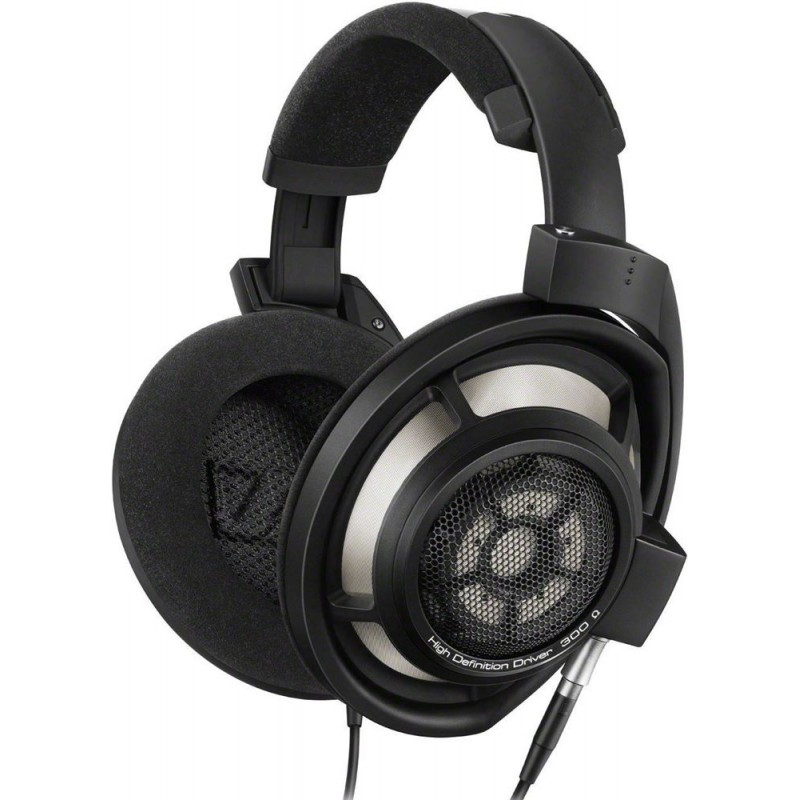

 1. Sennheiser HD 800S
Elevate Your Audio Experience to New Heights, The Sennheiser HD 800S is a masterpiece in audio engineering, delivering unparalleled sound clarity and an expansive soundstage. Immerse yourself in a world of sonic brilliance.
Pros:
Unparalleled sound clarity and expansive soundstage.
Masterpiece in audio engineering.
Ideal for audiophiles seeking top-tier performance.
Cons:
Higher price point.
 2. Sony WH-1000XM4
2. Sony WH-1000XM4
 6. Focal Utopia
6. Focal Utopia